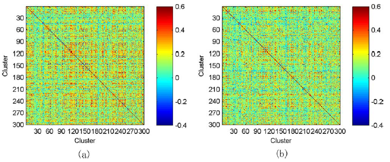
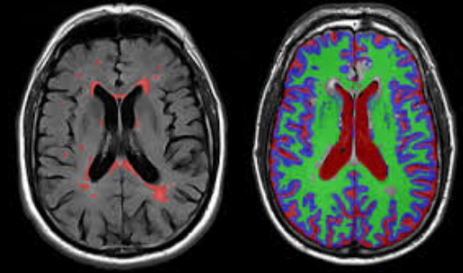
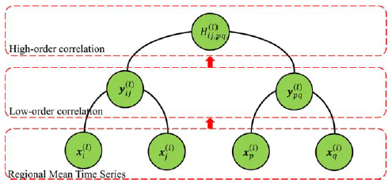
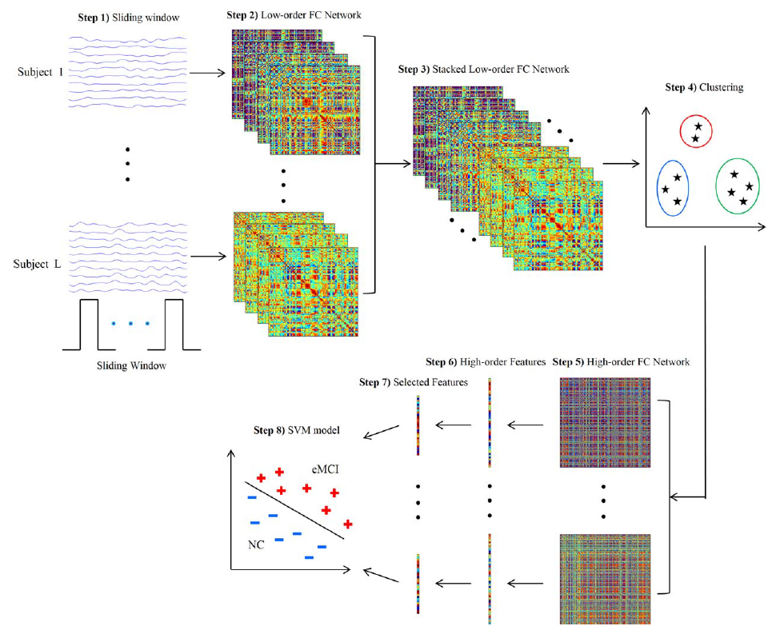

通过静息态功能磁共振成像（RS-fMRI）技术估算的脑功能连通性（FC）网络已经成为准确诊断神经退行性疾病的一种有效的方法。然而，从仅考虑大脑区域之间的相关性（就RS-fMRI时间序列而言）的角度上，常规FC网络本质上是低阶的。从这种类型的大脑网络派生的功能可能无法充当有效的疾病生物标记。为了克服此缺点，我们建议提取新颖的高阶FC相关性，以表征不同对大脑区域之间的低阶相关性如何相互作用。具体而言，对于每个大脑区域，首先在整个RS-fMRI时间序列上执行滑动窗口方法，以生成多个短重叠段。对于每个段，构建一个低阶FC网络，以测量大脑区域之间的短期相关性。这些低阶网络（从所有分段获得）描述了短期FC随时间变化的动态，因此也形成了每对大脑区域的相关时间序列。为了克服维数的诅咒，我们将相关时间序列根据其固有的通用模式进一步分为少量的不同簇。然后，计算不同聚类的各个平均相关时间序列之间的相关性，以表示不同对大脑区域之间的高阶相关性。最后，我们通过组合低阶和高阶FC网络的特征来设计模式分类器。实验结果证明了高阶FC网络在疾病诊断中的有效性。

图1. 平均高阶脑功能连接网络（左边：早期认知障碍，右边：正常人）

Fig 2. RS-fMRI examples .
我们使用了阿尔茨海默氏病神经影像计划（ADNI）数据库中公开的神经影像数据。 ANDI由美国国家老龄研究所，美国国家生物医学成像与生物工程研究所，食品药品管理局，私人制药公司和非营利组织于2003年发起。最初，ADNI的目标是定义用于临床试验的生物标记物，并确定衡量AD治疗剂治疗效果的最佳方法。现在，它的目标已经扩展到使用生物标记物在痴呆前期检测AD。 将包括MRI，PET和相关神经心理学评估在内的多种生物标记物结合在一起，以检测eMCI和早期AD的进展。确定敏感和特异性的生物标志物可以促进新疗法的开发，减少临床试验的时间和成本，并增进我们对AD / eMCI生物学基础的理解。
可以通过点击下面的按钮来下载这个数据集.
基于FC的eMCI分类的典型过程通常包括以下组件：网络构建，特征提取和选择以及分类。这项研究主要集中在第一步，即网络构建，因此采用简单的现有方法来实现其他步骤。

图3. 通过低阶关联来一层一层地构建高阶关联
在图4中，我们提供了高阶FC网络构建及其在eMCI识别中的应用的流程图。具体而言，提出的框架包括以下八个步骤：（1）将整个RS-fMRI时间序列划分为多个子序列的重叠部分；（2）构造时间低阶FC网络/矩阵的集合，每个分段一个。（3）将所有主题的所有时间低阶FC网络/矩阵堆叠在一起，以获得在这些堆叠矩阵的相同位置中每个元素的相关时间序列； （4）使用聚类算法将所有这些相关时间序列分组为不同的聚类； （5）通过将每个聚类的平均相关时间序列作为一个新的顶点，并以每对这些新的顶点之间的成对皮尔逊相关系数作为权重，为每个主题构建一个高阶FC网络； （6）计算加权图局部聚类系数，作为高阶FC网络的简单特征表示；（7）利用稀疏学习从高阶特征（局部聚类系数）中选择判别特征的子集； （8）在选定的高阶特征子集上构建SVM模型进行分类。

图4. 构建高阶脑功能连接网络的框架示意图
除了构建上面的高阶FC网络之外，我们还在每个对象的整个RS-fMRI时间序列上构建了一个常规的低阶FC网络。 然后，按照相同的步骤（6）-（8），我们从该低阶FC网络中提取低阶特征（局部聚类系数），进行特征选择，并基于这些低阶特征构建另一个SVM模型。 最后，将两个SVM模型的分类得分通过加权平均相融合以产生最终分类。